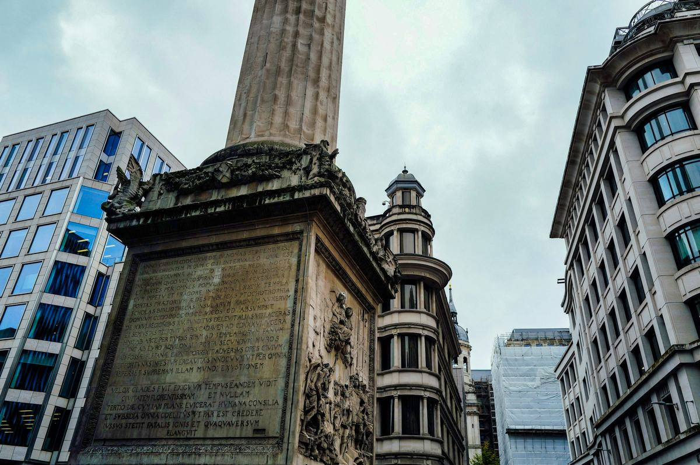

Fire safety law in England: a timeline from 1666 to today
Most fire safety law came after a disaster. This page lists the main points in date order, from the Great Fire of London to the rules that apply to buildings in England today. It is a short summary, not a full history, and I will add to it as the law changes. Last updated 23 October 2026.

-
The Great Fire of London
A fire that began in a baker's shop in Pudding Lane burned for days and was mostly under control by 5 September. About 13,200 houses and 87 parish churches were destroyed.1
What changed: Houses were pulled down to make firebreaks. Insurance companies began employing men to put out fires, which led to the first fire brigades.1
-
Rebuilding of London Act
Parliament set rules for rebuilding the City of London. New buildings had to be built of brick or stone, and some streets and passages were widened.2
What changed: How a building was built was now controlled by law, partly to reduce the risk of fire.
-
Fire Precautions Act 1971
Premises covered by the Act needed a fire certificate from the fire authority.3
What changed: Fire safety depended on a certificate issued by the fire authority.
-
Fire Precautions (Workplace) Regulations 1997
These regulations, amended in 1999, set fire safety duties for employers and ran alongside the 1971 Act.3
What changed: Employers now had their own duties for fire safety in the workplace.
-
Regulatory Reform (Fire Safety) Order 2005
The Order came into force in England and Wales on 1 October 2006. It replaced the fire certificate system and the workplace regulations.3, 4
What changed: The duty moved from the fire authority to the responsible person, who is the employer, or whoever controls or owns the premises. They must carry out a fire risk assessment, act on it and keep it under review. This is the law our assessments are written under.
-
Grenfell Tower fire
A fire at Grenfell Tower in North Kensington killed 72 people. The government's own report on the inquiry describes the tragedy as preventable.5
What changed: A public inquiry and a review of building regulations followed. Most of the changes below come from them.
-
Hackitt review
Dame Judith Hackitt's independent review made over 50 recommendations for a more robust building regulatory system, with a focus on high-rise residential buildings.6
What changed: Its recommendations shaped the Building Safety Act 2022.
-
Fire Safety Act 2021
The Act received Royal Assent on 29 April 2021 and came into force on 16 May 2022.7
What changed: The Fire Safety Order now covers the structure, external walls, common parts and flat entrance doors of buildings with two or more homes.
-
Building Safety Act 2022
The Act created a Building Safety Regulator and a stricter regime for higher-risk buildings, which in practice means residential buildings of 18 metres or seven storeys and over.8
What changed: New duties for the people who design, build and manage higher-risk buildings. The Act also changed the Fire Safety Order (see 1 October 2023).
-
Fire Safety (England) Regulations 2022
These regulations apply in England to buildings with two or more homes. They were made under the Fire Safety Order and came into force on 23 January 2023.9
What changed: Residents must be given fire safety instructions and information about fire doors. In buildings over 11 metres, common-part fire doors must be checked quarterly and flat entrance doors annually. Buildings of 18 metres or seven storeys and over have further duties. See our articles on the 11m and 18m thresholds and Regulation 6.
-
Building Safety Act 2022, section 156
Section 156 amended the Fire Safety Order.8
What changed: The fire risk assessment and the fire safety arrangements must now be recorded in full in every premises, whatever the size. The record must name the assessor and the responsible person, with a UK address. There is also more information sharing between responsible persons, and higher fines for some offences.
-
Government response
The government accepted all 58 recommendations and set a timeline of at least four years, because some need new legislation.5
What changed: Responsibility for fire policy moved from the Home Office to the Ministry of Housing, Communities and Local Government (MHCLG) on 1 April 2025.5
-
Consultation on fire risk assessors
MHCLG asked for views on the future of the fire risk assessor profession, including how competence is shown and what regulatory powers are needed. The consultation closed on 18 June 2026.11
What changed: Nothing yet. At the time of writing, in October 2026, the government has not published its response.
Still to come
Watch for the government's response to the fire risk assessor consultation, and an update to Approved Document B, the guidance on fire safety in building work.5
Sources and notes
- London Fire Brigade, The Great Fire of London.
- legislation.gov.uk, Rebuilding of London Act 1666 (18 & 19 Cha. 2 c. 8, passed in February 1667).
- Shropshire Fire and Rescue Service, Regulatory Reform (Fire Safety) Order 2005.
- legislation.gov.uk, The Regulatory Reform (Fire Safety) Order 2005 (SI 2005/1541).
- GOV.UK, Grenfell Tower Inquiry Phase 2 Report Government Response: Annual Report 2026 (PDF).
- GOV.UK, Independent Review of Building Regulations and Fire Safety: final report, 17 May 2018.
- Cheshire Fire and Rescue Service, Fire Safety Act 2021.
- legislation.gov.uk, Building Safety Act 2022 (2022 c. 30), including section 156. Royal Assent was on 28 April 2022.
- legislation.gov.uk, The Fire Safety (England) Regulations 2022 (SI 2022/547).
- GOV.UK, Grenfell Tower Inquiry Phase 2 report, Volume 1 (PDF), published 4 September 2024.
- GOV.UK, Fire risk assessors profession (MHCLG consultation, 26 March to 18 June 2026).
This article is for general information only and doesn't constitute legal advice or a fire risk assessment. The law changes, and the specifics of your building will be confirmed on inspection.
Need a fire risk assessment?
Get in touch